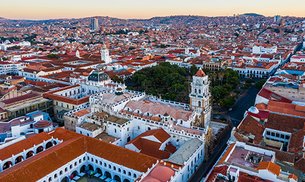
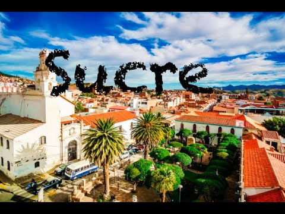

Sucre es la capital constitucional de Bolivia, conocida por su arquitectura colonial bien conservada y su rica historia. Es una ciudad situada en el departamento de Chuquisaca y es considerada el corazón de la historia y la cultura bolivianas.
Sucre fue fundada en 1538 y fue el lugar donde se firmó el Acta de la Independencia de Bolivia en 1825. La ciudad cuenta con numerosos museos, iglesias y edificios históricos, como la Casa de la Libertad y la Catedral Metropolitana.
Entre los principales atractivos turísticos de Sucre se encuentran el Parque Cretácico, famoso por sus huellas de dinosaurios, y la Plaza 25 de Mayo, el corazón de la ciudad rodeado de bellas edificaciones coloniales.
La gastronomía de Sucre es muy variada y deliciosa. Algunos platos típicos incluyen el mondongo, el chorizo chuquisaqueño y las empanadas de queso. Es un verdadero festín para los amantes de la buena comida.
Vivir en Sucre es una experiencia única, combinando la tranquilidad de una ciudad pequeña con la riqueza cultural e histórica de una gran capital. Es un lugar ideal para disfrutar de una vida apacible y llena de historia.

